Declaration of Independence
Announced independence from Great Britain and named ideals of rights, equality, liberty, and government by consent.
America 250
Three founding documents shaped the civic story: rights, liberty, self-government, limits on power, and the work of each generation to keep those promises alive.
Announced independence from Great Britain and named ideals of rights, equality, liberty, and government by consent.

Created a durable framework for national government, including separation of powers, federalism, and rule of law.
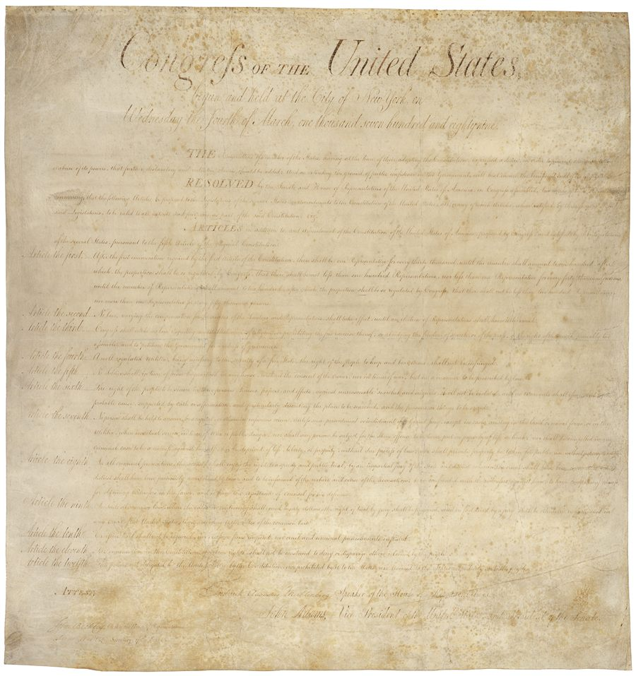
Added the first ten amendments, protecting core liberties and limiting government power.
People can speak, publish, worship, gather, and petition peacefully.
Government must follow rules before taking liberty or property.
Power is divided, checked, and bound by a written Constitution.
Amendments expanded who could participate in self-government.
The Constitution's promises became tools for fuller liberty.
Citizens help keep constitutional government alive in every generation.
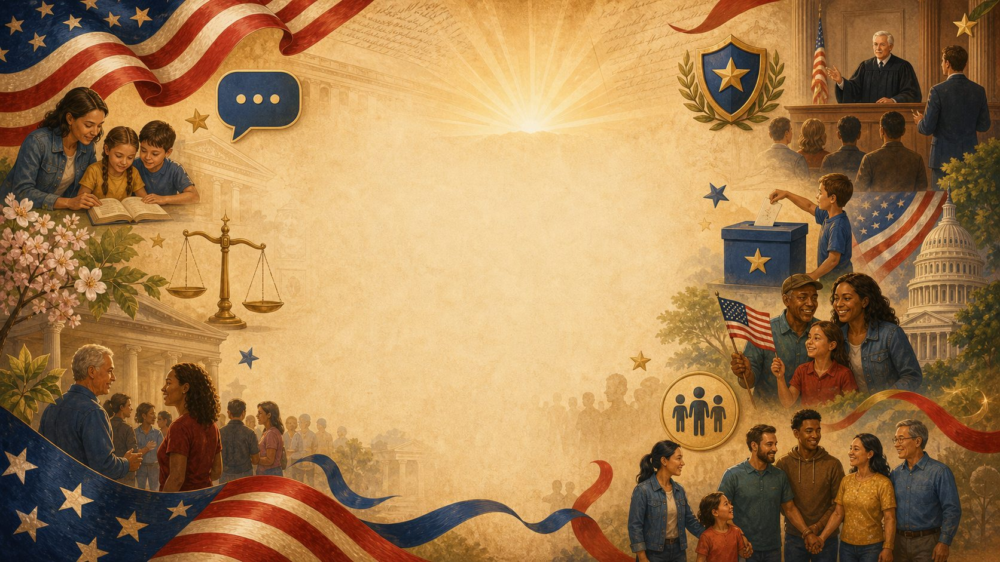
The National Archives calls the Declaration, Constitution, and Bill of Rights the "Charters of Freedom."
Benefit today: civic memory1776
A public statement that the colonies were no longer under British rule, built around ideals that still shape American civic language.
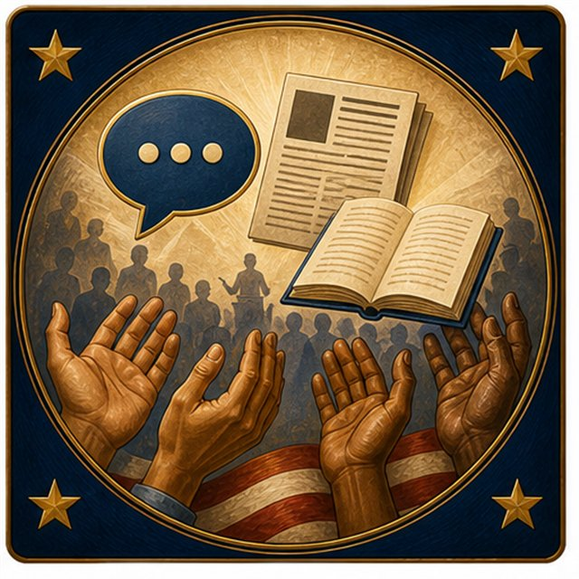
Americans use speech, worship, press, assembly, and petition to participate in civic life.
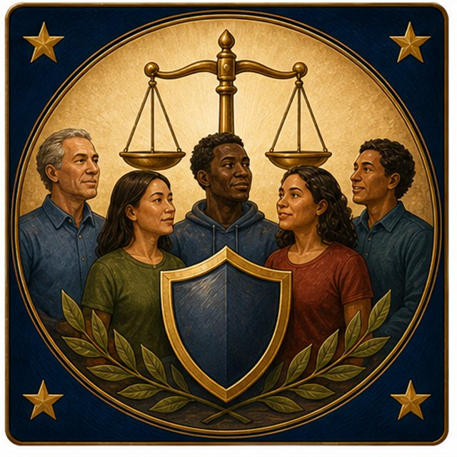
The Declaration's language helped later Americans argue for fuller liberty and equal protection.
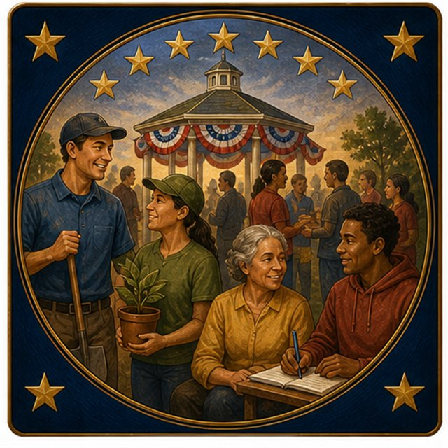
Citizens keep the founding promise alive through voting, service, meetings, and respectful debate.
Principal author of the Declaration.
Used founding ideals to confront injustice.
Connected Declaration ideals to preserving the Union and ending slavery.
Connected founding language to women's rights.
Appealed to the Declaration and Constitution as promises America should fulfill.
Americans can speak, publish, worship, gather, and petition peacefully.
The Declaration's language still shapes how Americans talk about rights and self-government. Its ideals inspired later movements to expand civic participation and equal rights.
1787
A written rulebook for national government, designed around law, separated powers, federalism, amendment, and authority rooted in the people.
The Constitution begins with the people, not a king. Today: citizens shape public life through voting, service, meetings, and respectful debate.
The states could work together better. Today: Americans cooperate across states on safety, roads, defense, trade, and emergencies.
A government of laws should treat people fairly. Today: courts and due process help people get a fair hearing.
The Constitution aims to help keep peace at home. Today: communities solve conflicts through laws, rights, and public service.
The nation can act together to protect the country. Today: national defense is a shared responsibility.
Government can support conditions that help communities thrive. Today: public services, safety, health, and infrastructure support everyday life.
Freedom is something to protect now and pass forward. Today: each generation learns, uses, and safeguards constitutional rights.
Article V gives the United States a peaceful process for amendment. Later generations used that process to abolish slavery, define citizenship, protect equal protection, and expand voting rights.
Abolished slavery.
Citizenship, due process, and equal protection.
Voting rights regardless of race, color, or previous servitude.
Women's right to vote.
No poll taxes in federal elections.
Voting age lowered to 18.
Constitution architect and key Bill of Rights figure.
Presided over the Constitutional Convention.
Credited with much of the final wording, including the Preamble.
1791
The first ten amendments protect core liberties, limit government power, and help define what constitutional freedom means in daily life.
Speech, religion, press, peaceful assembly, and petition.
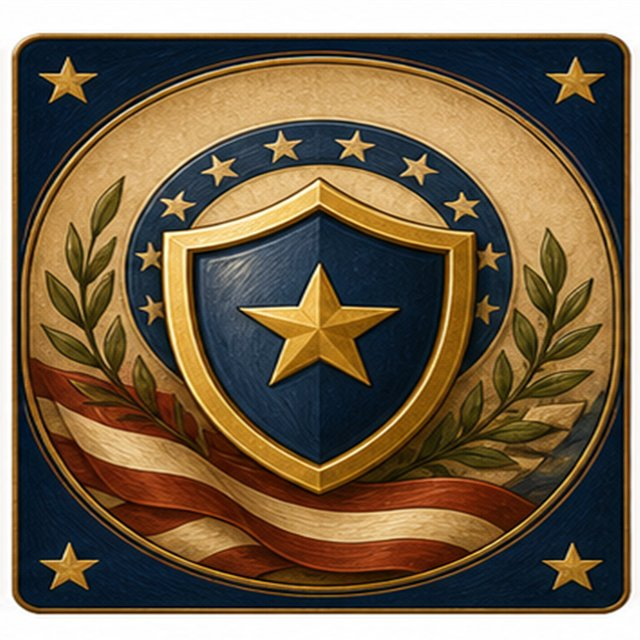
The right to keep and bear arms, represented with a constitutional shield.
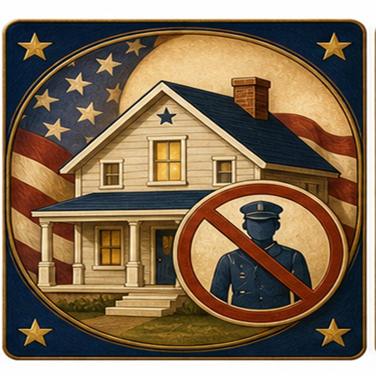
No forced quartering of soldiers in homes in peacetime.
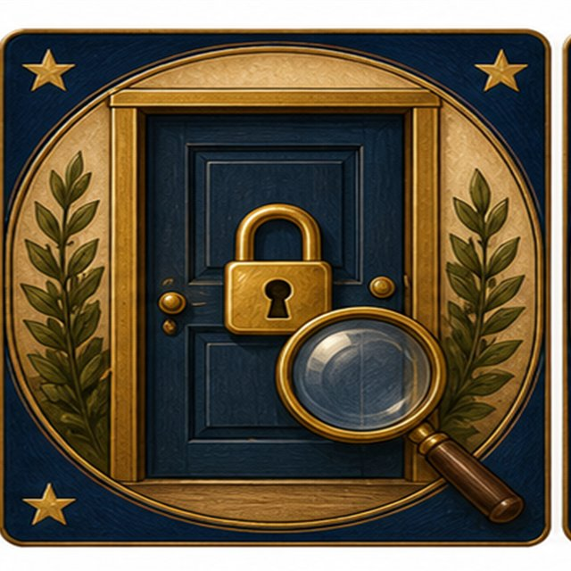
Protection against unreasonable searches and seizures.
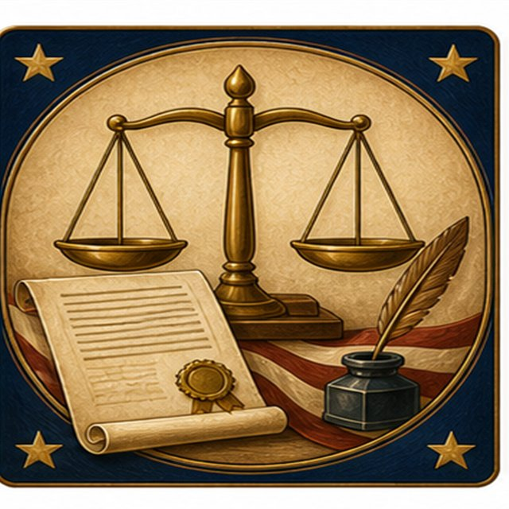
Due process, grand jury rights, and protection from self-incrimination.
Fair criminal trials, including a lawyer and an impartial jury.
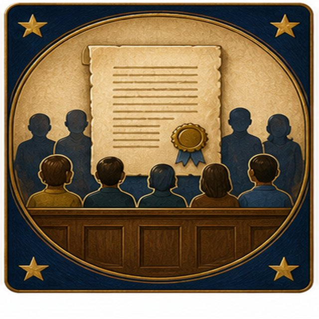
Jury trials in many civil cases.
No excessive bail, excessive fines, or cruel and unusual punishment.
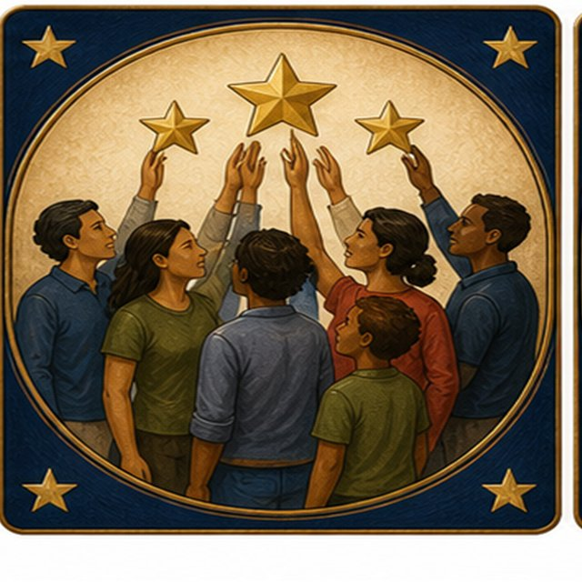
People have other rights beyond those listed.
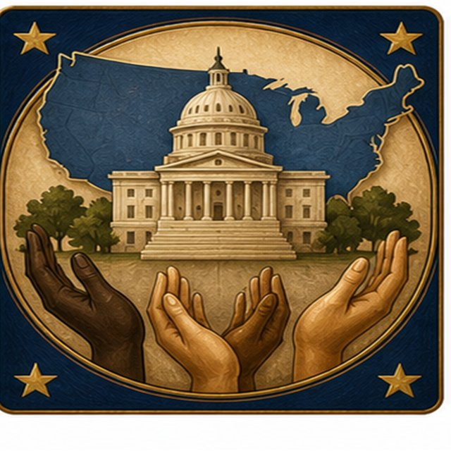
Powers not given to the federal government are reserved to states or the people.
Speak, publish, worship, gather, and petition peacefully.
Government must follow rules before taking liberty or property.
Power is checked and bound by a written Constitution.
A key figure behind the Bill of Rights.
His rights concerns helped build momentum for explicit protections.

Rights and process place legal limits on public power.
Quiz Master Sheet
Use these questions to quiz visitors on the information shown on the display sheets. The answer is printed directly below each question.
Answer: Declaration, Constitution, and Bill of Rights.
Answer: The Declaration of Independence.
Answer: The Constitution.
Answer: The first ten amendments.
Answer: We the People.
Answer: Free expression.
Answer: A peaceful process for amendment.
Answer: 13th Amendment.
Answer: 19th Amendment.
Answer: 26th Amendment.
All ten answers are covered by the printed sheets: page 1 covers the Charters of Freedom and civic benefits, page 2 covers the Declaration, page 3 covers the Constitution, Preamble, Article V, and later amendments, and page 4 covers the Bill of Rights.